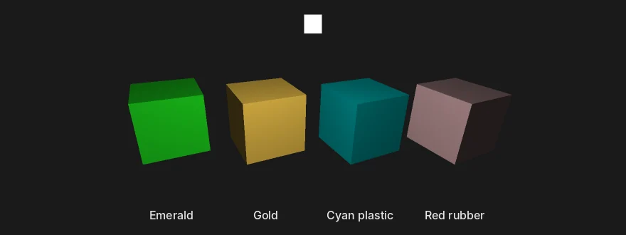

Lighting
Materials#
examples/Sources/08-BasicLighting, run with swift run BasicLighting. Download all examples or see how to run them.Steel, wood and plastic react to the same light in different ways. To describe that, we stop using a single object color and give each surface a material: separate colors for the three Phong terms, plus a shininess.
Material and light structs#
MSL structs can nest, which keeps the uniforms readable:
struct Material {
float3 ambient;
float3 diffuse;
float3 specular;
float shininess;
};
struct Light {
float3 position;
float3 ambient;
float3 diffuse;
float3 specular;
};
struct FragmentUniforms {
Material material;
Light light;
float3 viewPosition;
};
ambientis the color the surface shows under ambient light, usually the same as its diffuse color.diffuseis the surface's main color.specularis the color of its highlight.shininesscontrols how tight the highlight is.
The light gets its own intensities per term as well. Ambient light should be weak, diffuse light is the light's actual color, and specular is usually full white.
The shader#
fragment float4 fragment_main(VertexOut in [[stage_in]],
constant FragmentUniforms &uniforms [[buffer(1)]]) {
Material material = uniforms.material;
Light light = uniforms.light;
float3 normal = normalize(in.normal);
float3 lightDir = normalize(light.position - in.worldPosition);
float3 viewDir = normalize(uniforms.viewPosition - in.worldPosition);
float3 reflectDir = reflect(-lightDir, normal);
float3 ambient = light.ambient * material.ambient;
float diff = max(dot(normal, lightDir), 0.0);
float3 diffuse = light.diffuse * (diff * material.diffuse);
float spec = pow(max(dot(viewDir, reflectDir), 0.0), material.shininess);
float3 specular = light.specular * (spec * material.specular);
return float4(ambient + diffuse + specular, 1.0);
}
The Swift side#
Mirror the structs exactly, in the same member order:
struct Material {
var ambient: Float3
var diffuse: Float3
var specular: Float3
var shininess: Float
}
struct Light {
var position: Float3
var ambient: Float3
var diffuse: Float3
var specular: Float3
}
struct FragmentUniforms {
var material: Material
var light: Light
var viewPosition: Float3
}
var fragmentUniforms = FragmentUniforms(
material: Material(ambient: [1.0, 0.5, 0.31],
diffuse: [1.0, 0.5, 0.31],
specular: [0.5, 0.5, 0.5],
shininess: 32),
light: Light(position: lightPosition,
ambient: [0.2, 0.2, 0.2],
diffuse: [0.5, 0.5, 0.5],
specular: [1, 1, 1]),
viewPosition: camera.position)
Check the layout
Material ends with a lone Float after three 16-byte vectors, so its size is 52 bytes and its stride is 64. Here the next member, light, is 16-byte aligned and starts at offset 64 in both languages. There is one trap with nested structs: Swift is allowed to place a small following member, such as a Float, inside the unused tail of the previous struct (at offset 52), while MSL never does. To stay safe, follow a nested struct with a 16-byte-aligned member, or end every nested struct on a 16-byte boundary. When values look wrong, print MemoryLayout<FragmentUniforms>.offset(of: \.viewPosition) and compare offsets by hand.
Playing with light colors#
Because the light has separate terms, changing the light changes the whole mood:
let lightColor = Float3(sin(time * 2.0), sin(time * 0.7), sin(time * 1.3)) * 0.5 + 0.5
fragmentUniforms.light.diffuse = lightColor * 0.5
fragmentUniforms.light.ambient = lightColor * 0.1
Real materials#
Tables of measured Phong values for real substances have circulated for decades. A few to try, with all light terms set to white:
| Material | Ambient | Diffuse | Specular | Shininess |
|---|---|---|---|---|
| Emerald | 0.02, 0.17, 0.02 | 0.08, 0.61, 0.08 | 0.63, 0.73, 0.63 | 77 |
| Gold | 0.25, 0.20, 0.07 | 0.75, 0.61, 0.23 | 0.63, 0.56, 0.37 | 51 |
| Cyan plastic | 0.0, 0.1, 0.06 | 0.0, 0.51, 0.51 | 0.50, 0.50, 0.50 | 32 |
| Red rubber | 0.05, 0.0, 0.0 | 0.5, 0.4, 0.4 | 0.7, 0.04, 0.04 | 10 |
Phong materials are a rough approximation. The PBR section replaces them with a model based on physics.

Exercises#
- Reproduce each material in the table.
- Why does a metal look more convincing when its specular color matches its diffuse color?